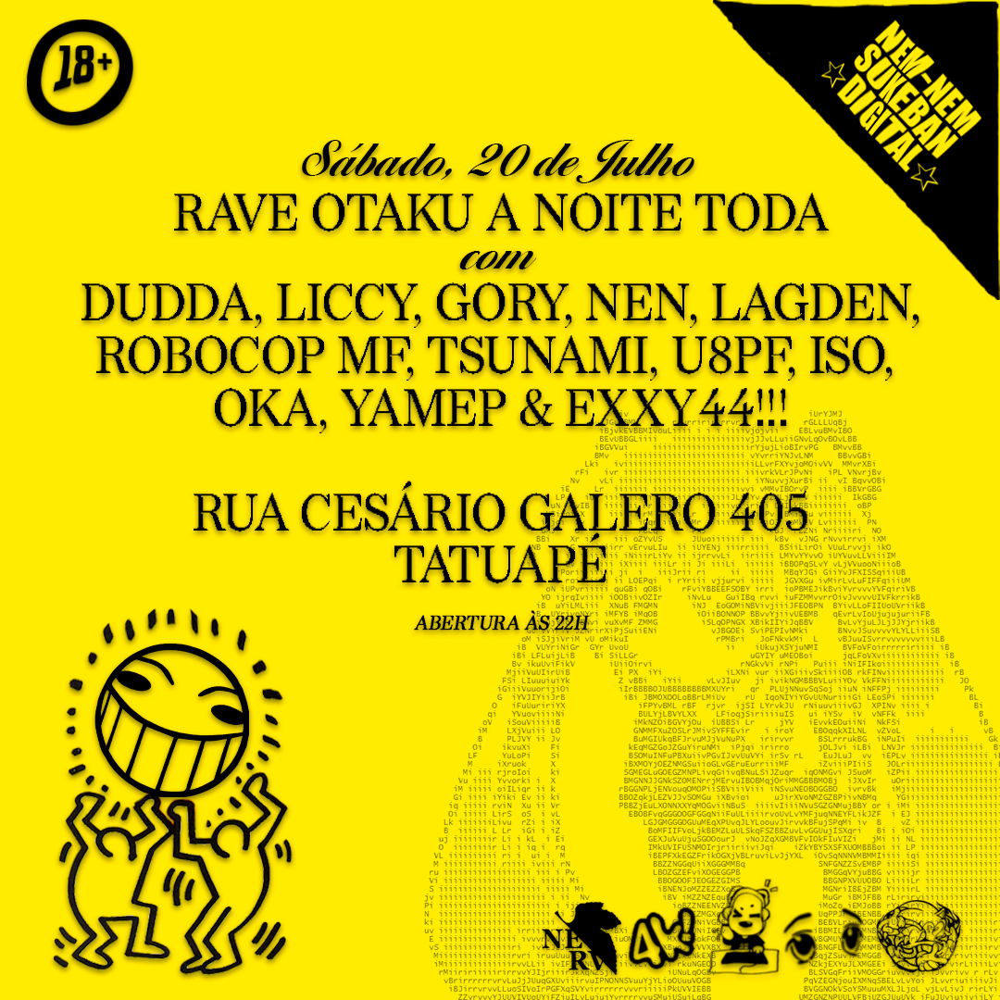
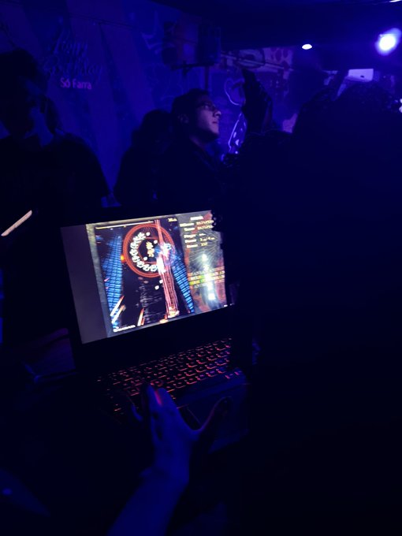

Corporação Nem-Nem Apresenta
NEM-NEM RAVE: ALGORITMO SOCIAL-CIBERNÉTICO PARA REINTEGRAÇÃO DE HIKIKOMORIS.
☆ NEM-NEM RAVE 001 ☆
Evento de Debut
20 de Julho de 2024 - São Paulo (ZL)
liccy
soundcloudlagden
soundcloudnen
lost media
robocop mf
lost media
unit08pilotfanpage
lost media
iso
soundcloudoka
lost media
yamep
soundcloud"Acho importante reforçar que não somos um "Bailão Otaku" ou outro evento normie. Não vamos ter apenas uma playlist de aberturas de anime tocando. Nosso evento é uma anikura, um evento "remix-oriented" que introduz a cultura de clube para um público otaku e terminalmente online, semelhante ao Club Mogra de Akihabara - não atoa já atraímos certa atenção da cena japonesa." - S. Mengxiang (CEO)
"lolita jogando touhou ao vivo 3 da manhã em uma rave otaku e vcs nada" - Estagiário
"derrubaram loló no PC PQP da festa vtnc !!!!" - nemnem
"eu baforei loló com a Menhera-chan @ nemnem" - nemnem
"EU ME SOCIALIZEI PELA PRIMEIRA VEZ NA NEMNEM!" - nemnem
"criaram o bailão otaku pra cult do my anime list e fãs algorithmwave" - nosso primeiro hater
"NAAÃO VC NÃO PODE FORMAR UMA SUBCULTURA DE RAVE REVIVAL DISSIDENTE BASEADA EM UM DESEJO POR SALVAR A INTERNET ATRAVÉS DE UMA ACREÇÃO CULTURAL-DIGITAL PARTICIPAR DE MERCADOS NÃO REGULAMENTADOS REJEITAR O MAINSTREAM PIXAR MURO & AMAR MENHERAS" - nemnem
"hipersticionaram uma rave pra otaku esquisito" - lagden
"PERDI A VIRGINDADE NA NEMNEM" - bloguinho da turma da mônica
"[...] VÃO EMBORA eu quero DORMIR PELO AMOR DE DEUS" - S. Mengxiang (CEO)
"Ilha sentinela do norte quando??" - muita gente
☆ NEM-NEM RAVE 002 ☆
Episódio de Praia
Verão - Rio de Janeiro (ZS)

A Corporação Nem-Nem é um coletivo de arte composto por nativos digitais pseudônimos, mas também uma irmandade próxima o suficiente para ser uma família, funcionalmente organizada como uma sociedade secreta virtual e um grupo de pesquisa em cultura, computação e memética.
A Nem-Nem foi fundada em 01 de Janeiro de 2024 por mengxiang com o objetivo de proporcionar uma plataforma para artistas brasileiros nativos da internet que compartilham um ideal comum. A principal motivação do projeto é permitir que esses artistas, muitas vezes excluídos do circuito mainstream, alcancem a visibilidade e a estrutura que merecem. Os recursos obtidos por meio de nossos projetos, eventos, loja e etc são redirecionados novamente para a Corporação, com o intuito de apoiar a expressão de nossos artistas e sustentar e expandir o alcance do projeto.
Quanto à nossa arte, a Corporação busca, primordialmente, promover experiências que se posicionem no limiar entre o virtual e o real. Galerias, ARGs, fóruns, exposições, raves, festas de quinze anos, caça ao tesouro e muito mais. Tudo com o objetivo de concretizar a nossa visão.
Deste modo, a Corporação se destina aos Otakus, Nerds, Furries, Cinéfilos, Gamers, Drainers, K-popers, Fujoshis, Programadores, E-girls, Usuários do AO3, Emos, Scene, Wotas, Fãs de Breakcore, Cosplayers, Menheras, Incels, Ratos de Academia, Jogadores de Servers Piratas de Grand Chase, todos que já tiveram uma conta no Tumblr ou no Roblox, e qualquer indivíduo que declara orgulhosamente que a internet é seu lar.